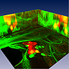
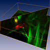
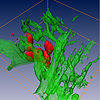
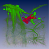

In Amira multi-channel images either can be represented as an RGBA color field or as separate gray level images grouped by a multi-channel object. This page demonstrates the latter approach. Note that there is also a tutorial on working with multi-channel data.
The images used in this demo are confocal stacks of the prothoracic ganglion of the locust Locusta migratoria. They were kindly provided by Dr. Paul Stevenson, University of Leipzig, Germany. Two different channels were recorded and stored as separate files.
 Projection view
 Slicing modules
 Resampling and isosurfaces
 Direct volume rendering